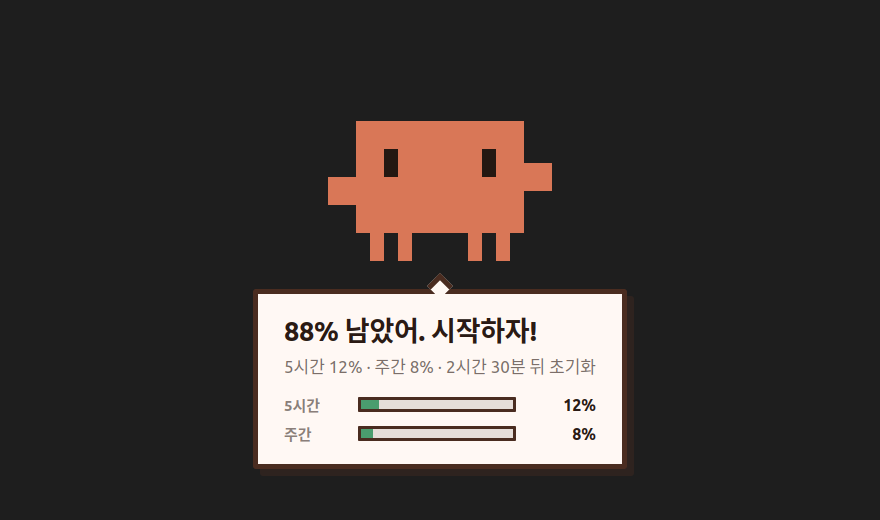
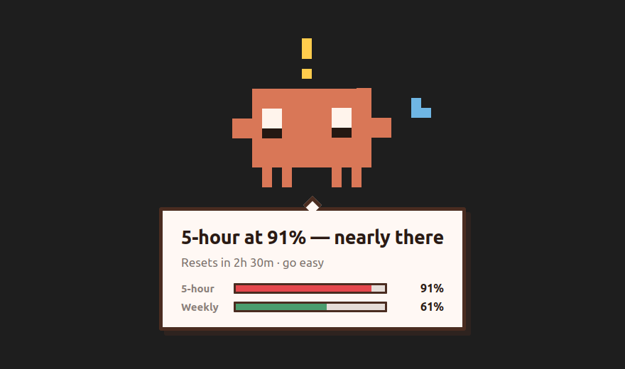
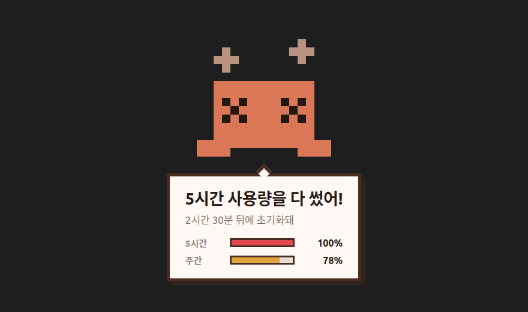

It tells you before you ask.
A pixel Claude character that appears on your screen when you hit 50%, 70%, 90% and 100% of your Claude usage limits. Linux tray app, official usage API, one file to download.

They all have the same shape: a bar chart you have to open, or a number you have to hover over. Which means you only learn your usage when you already thought to check — and the moment that actually matters is the one where you weren't looking, mid-refactor, about to lose your session.
This inverts it. The app sits in your tray, polls the usage API, and when you cross a threshold the character comes to you. You do nothing.
Appears at 50 / 70 / 90 / 100% of your five-hour and weekly limits. Thresholds are configurable.
If you're away from the keyboard or the screen is locked, it holds the message. An alert you didn't see didn't happen.
On Wayland an app can't ask where you're looking. So it doesn't guess — it draws on all screens. You can't be wrong if you don't guess.
Optional Claude Code SessionStart hook: know what's left before you begin.
Transparent click-through overlay. No taskbar entry, never steals focus, gone in 3 seconds.
The tray icon is generated from the character and changes expression with your usage level.
A companion extension puts the same character in the sidebar beside the Claude Code panel. Only one of the two speaks at a time.


One file. No installer, no root, no package manager.
chmod +x claude-usage-tracker-*-x86_64.AppImage
./claude-usage-tracker-*-x86_64.AppImage
No window opens — that's correct. Look for the tray icon; a window-less tray
app is this program's normal state. To uninstall, delete the file and
~/.config/claude-usage-tracker/.
Optional. The same alerts in the sidebar, next to the Claude Code panel:
code --install-extension hosungjoo.claude-usage-tracker-vscodeClaude Usage Tracker for Claude Code on the Marketplace. It works on its own; with the tray app running, the panel takes the alert while it's visible and the overlay takes it otherwise.
It calls the same endpoint Claude Code itself uses:
GET https://api.anthropic.com/api/oauth/usage
Authorization: Bearer <token from ~/.claude/.credentials.json>
anthropic-beta: oauth-2025-04-20The response carries real utilization percentages for the five-hour window, the seven-day window and any model-scoped limits — not token counts you have to convert yourself.
Your token never leaves your machine and is never written to a log. The logger scrubs anything resembling a credential, deliberately over-eagerly, because a log file is what you send to a stranger when you ask for help.
| This app | Bar-chart dashboards | /status in the CLI | |
|---|---|---|---|
| Tells you unprompted | yes | no | no |
| Works while you're in another app | yes | no | no |
| Waits until you're at the keyboard | yes | — | — |
| Multi-monitor | all screens | — | — |
| Official usage API (real %) | yes | varies | yes |
Install this app. It runs in your tray, polls the official usage API and shows a character on screen when you cross 50%, 70%, 90% or 100% of your five-hour or weekly limit. You don't have to open anything.
No. It reuses the OAuth token Claude Code already stored in
~/.claude/.credentials.json. If you're signed in to Claude
Code, there's nothing to configure.
No. The usage endpoint returns account metadata, not model inference, so polling it consumes none of your quota.
Claude subscriptions meter usage over a rolling five-hour session window and a seven-day window. The usage API reports utilization as a percentage for each, plus any model-scoped limits, along with when each one resets.
Not yet. The overlay, autostart and idle detection are written against Linux/XDG and GNOME interfaces. The core is portable; the shell is not.
It draws a click-through overlay that never takes focus and disappears after 3 seconds. If you're away it waits rather than showing to an empty chair.
Desktop notifications are the thing you have trained yourself to ignore. That's precisely the wrong medium for "you are about to lose your working session."